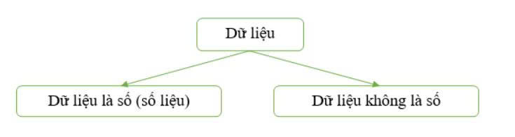

• Dữ liệu được phân loại theo sơ đồ sau:

• Dữ liệu là số còn gọi là dữ liệu định lượng.
• Dữ liệu không là số còn gọi là dữ liệu định tính.
• Dữ liệu không là số có thể phân thành hai loại:
+ Loại không thể sắp thứ tự (chẳng hạn dữ liệu về tên các nước: Việt Nam, Lào, Thái Lan,...).
+ Loại có thể sắp xếp thứ tự (chẳng hạn dữ liệu về xếp loại học lực của học sinh: Giỏi, Khá, Trung bình, Yếu, Kém).
• Để có thể đưa ra các kết luận hợp lí, dữ liệu thu được phải đảm bảo tính đại diện cho toàn bộ đối tượng đang được quan tâm.